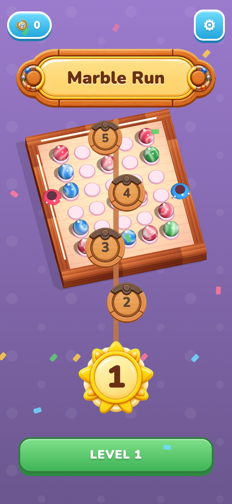

Saga rail is drawn on top of the live 3D board — nodes collide with the playfield


What to look at
In v2, node 4 sits dead-center over the marbles, nodes 5 and 3 punch through the board edges, and the connector line runs straight down through the playfield. In v1 the board is a small discrete sprite at the top and the numbered chain hangs cleanly below it through empty purple space. This clutter is the single loudest "something's wrong" signal on the menu.
Root cause
App.renderMenu() → controller.showMenuScene() renders the gameplay 3D board full-bleed on the shared #scene canvas as the menu backdrop; the DOM saga rail (HomeMenu → SagaMap) is layered on top.
Fix direction · layout/composition
Stop using the gameplay board as the menu backdrop. Render a small static board sprite as the rail's top anchor and route all numbered nodes strictly below it (mirror v1). Change lives in App.mountMenu + HomeMenu vertical order.